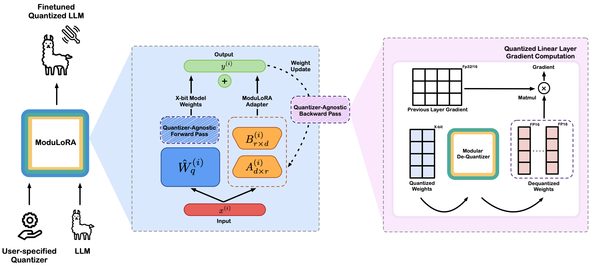

Junjie Oscar Yinn, Jiahao Dong, Yingheng Wang, Chris De Sa, and Volodymyr Kuleshov.
Date: March 2024

Introduction
Finetuning LLMs on consumer GPUs poses significant challenges due to LLMs’ sheer size and memory requirement. Finetuning LLMs have shown to be an essential task for developing interactive agents with instruction following finetuning (Wang et al., 2022) and powerful AI systems through RLHF (Ouyang et al., 2022). Thus, improving the memory-efficiency of LLM finetuning is an important step toward accessbile and practical LLMs application.
One promising class of methods for memory-efficient finetuning is parameter efficient finetuning (PEFT), which usually invovles learning a small adapter that can be applied to the pre-trained model (Ding et al., 2023). PEFT reduces the memory requirement for finetuning LLMs by freezing its pre-trained parameters and optimizing a set of new parameters that is a fraction of the pre-trained parameters.
In this blogpost, we introduce ModuLoRA, a modular PEFT framework that integreates user-specified weight quantizer with finetuning via low-rank adapters (LoRAs). ModuLoRA allows 2-bit models to acheive near lossless downstream finetuning peformance compared to higher precision 4-bit, 8-bit, and even 16-bit models. Leveraging the transformers and peft libraries within the Hugging Face ecosystem, users can finetune and deploy 2/3/4-bit models easily. The abstract of the paper is as follows:
We propose a memory-efficient finetuning algorithm for large language models (LLMs) that supports finetuning LLMs with 65B parameters in 2/3/4-bit precision on as little as one 24GB GPU. Our method, modular low-rank adaptation (ModuLoRA), integrates any user-specified weight quantizer with finetuning via low-rank adapters (LoRAs). Our approach relies on a simple quantization-agnostic backward pass that adaptively materializes lowprecision LLM weights from a custom black-box quantization module. This approach enables finetuning 2-bit and 3-bit LLMs for the first time—leveraging state-of-the-art 2-bit QuIP# quantization and 3-bit OPTQ quantization—outperforming finetuning that relies on less sophisticated 4-bit and 8-bit methods. In our experiments, ModuLoRA attains competitive performance on text classification, natural language inference, and instruction following tasks using significantly less memory than existing approaches, and we also surpass the state-of-the-art ROUGE score on a popular summarization task. We release ModuLoRA together with a series of low-precision models as part of LLMTools, a user-friendly library for quantizing, running, and finetuning LLMs on consumer GPUs.
Resources
We provide several resources with this blogpost to get started with ModuLoRA:
→ ModuLoRA Paper (TMLR with Featured Certificate)
→ Codebase (LLMTools) for Easy Usage
Method Overview
ModuLoRA is a research project at Cornell University, and is based on the following publications.
- Junjie Yin, Jiahao Dong, Yingheng Wang, Christopher De Sa, Volodymyr Kuleshov ModuLoRA: Finetuning 2-Bit LLMs on Consumer GPUs by Integrating with Modular Quantizers. TMLR 2023 Featured Certificte
- Jerry Chee, Yaohui Cai, Volodymyr Kuleshov, Christopher De Sa. QuIP: 2-Bit Quantization of Large Language Models with Guarantees. NeurIPS 2023 Spotlight
- Tseng, Albert, Jerry Chee, Qiyao Sun, Volodymyr Kuleshov, Christopher De Sa. “Quip#: Even better LLM quantization with hadamard incoherence and lattice codebooks.” arXiv preprint arXiv:2402.04396 (2024).
Quantization x LoRA
ModuLoRA relies on two components: quantization and low rank adapation (LoRA) of LLMs. Quantization methods reduce the number of bits required to store model weights. Recently, OPTQ demonstrated the feasibility of quantizing to billion-parameter LLMs. A x-bit quantization method has the form (\hat{W}_q, \mathbf{z}, \mathbf{s}) = \mathcal{Q}(\mathbf{W}) \quad \quad \hat{W} = \mathcal{D}(\hat{W}_q, \mathbf{z}, \mathbf{s}).
Here, the quantization algorithm \mathcal{Q} takes a weight matrix \mathbf{W} \in \mathbb{R}^{d \times d} (or its subset) and outputs a quantized version \hat{W}_q \in \{0, 1, \ldots, 2^{b-1}\}^{d \times d}, using x bits to represent each entry of \mathbf{W}, as well as zero and scale parameters \mathbf{z}, \mathbf{s} \in \mathbb{R}^d (in full precision). The dequantization algorithm \mathcal{D}(\hat{W}_q, \mathbf{z}, \mathbf{s}) recovers an approximation \hat{W} \in \mathbb{R}^{d \times d} by rescaling the quantized weights as \hat{W} = \mathbf{s} \odot \hat{W}_q + \mathbf{z}, where \odot denotes the Hadamard product. The operations \odot and + are defined to be compatible with numpy-style broadcasting.
Currently, ModuLoRA incorporates two quantization modules–OPTQ and QuIP#–that enables low-precision finetuning with little loss degradation. Recently, Frantar et al. (2023) proposed OPTQ, a quantization algorithm that scales to modern LLMs. The method iteatively runs two steps over the weight columns: (1) quantize with nearest rounding and compute the error, (2) update the remaining weights with a scaled error.
Following OPTQ, Chee et al. (2023) proposed QuIP, a quantization algorithm that makes two-bit LLM compression viable for the first time. The method follows improves upon OPTQ with an efficient pre- and post-processing procedure ensuring weight and Hessian incoherence through multiplication by random orthogonal matrices. Further, Tseng et al. (2023) proposed QuIP#, combining lattice codebooks with incoherence processing from QuIP to create state-of-the-art 2 bit quantized models. Both QuIP and QuIP# optimize weights through a per-layer “adaptive rounding” loss function, defined as: \ell(\hat W_q) = E_x \left[ \| (\hat W_q - \mathbf{W})x \|^2 \right] = \operatorname{tr}\left( (\hat W_q - \mathbf{W}) H (\hat W_q - \mathbf{W})^T \right). where x \in \mathbb{R}^n is the input vector drawn from a calibration set uniformly and H acts as the second-moment matrix for these vectors, analogous to a Hessian proxy.
For more details about the incorporated quantization module, please refer to the original Quip# and OPTQ paper.
The LoRA algorithm by Hu et al. (2021) decomposes the weights W into a sum of frozen base model weights W_0 \in \mathbb{R}^{d \times d} and a small additive low-rank adapter AB^T consisting of the product of two rectangular matrices A, B \in \mathbb{R}^{d \times r}, where r > 0 indicates the rankFor simplicity here we consider square weight matrices W; the rectangular case is a straightforward generalization.
:
W = W_0 + AB^T
where matrix A is being initialized to Gaussian noise and B to 0 (s.t. AB=0 during the start of the training). This way, LoRA reparameterizes the foward pass of the linear layer as X(W) = X(W_0 + AB^T) , where X is the previous layer’s activation, and only A and B received weights updates during finetuning. Unlike full finetuning methods, LoRA is very memory efficient in model finetuning, as it doesn’t require extra GPU memory for gradient and optimizer state storage.
Modularity
We released the first version of our method in April 2023 link, and have since been refining it based on user feedback. In a parallel effort, Dettmers et al. (2023) proposed QLoRA, an approach for tuning quantized 4-bit LLMs based on LoRA. The method uses a novel quantization data type 4-bit NormalFloat to achieve competitive results with full finetuning. Subsequent work such as LP-LoRA follows QLoRA’s quantization scheme and proposes a dynamic method to configure quantization parameters (Guo et al., 2023). However, these approaches predefine a quantization scheme that makes them challenging to scale as more advanced quantization scheme are being developed and used.
In our work, we explore the use of modular quantizer by decomposing quantization finetuning tasks into a more general form that may be handled by our quantization-agnostic forward/backward pass. Our quantization-agnostic module compose an simple but efficient backward pass for different quantization scheme. Crucially, ModuLoRA does not specificy a particular quantization scheme; rather, it incorporates a quantization-agnostic backward pass that enables flexible finetuning in desired precision. These advantages make ModuLoRA an easy-to-use, performant, and modular PEFT framework.
LLMTools
We implement ModuLoRA as part of LLMTools, a compact, user friendly library that enables users to finetune and perform inference on the largest LLMs on consumer hardware. The LLMTools library enables finetuning LLMs in 2-bit, 3-bit, and 4-bit precision using the ModuLoRA algorithm. It also provides an easy-to-use Python API for quantization, inference, and finetuning, as well as modular support for multiple quantizers, LLMs (including LLaMA1, LLaMA2, BLOOM, and OPT), and optimization algorithms (including all that are compatible with the Hugging Face Trainer class). Lastly, LLMTools supports easily loading datasets and sharing models via the HuggingFace Hub.
Please see usage for example usage of LLMTools.
Results
Here, we present some ModuLoRA results on a popular natural langauge inference benchmark. More experiment results can be found in the paper.
Natural Language Inference
We finetune 7B to 65B LLaMA models on the Multi-Genre Natural Language Inference Corpus (MNLI) (Williams et al., 2018) and evaluate on the matched test sets (in-domain examples), reporting accuracy.
Models. We evaluate ModuLoRA and on the LLaMA-1 family of models. We quantize the models to 3 bits and 4 bits using OPTQ as in [4] with calibration 128 samples from C4 [5]. We quantize the models to 2 bits using QuIP# as in [6, 7] with E_8 lattice codebooks.
Baseline. We use LoRA (as implemented in the PEFT library (Mangrulkar et al., 2022)) to finetune models quantized in 8 bits using the BitsAndBytes library (Dettmers et al., 2022); we also compare to full-precision results from the literature. In recent work, Dettmers et al. (2023) proposed QLoRA, a related 4-bit finetuning algorithm implemented in the BitsAndBytes library.
Training. We finetune all models on NVIDIA TITAN, 3090, and A6000 GPUs (depending on the model) with a LoRA rank of r = 8 and alpha of a = 32, and report results from 3 random seeds. We set up the training procedure following LoRA paper, with slight variation to accommodate our particular language models.
Our 2-bit and 3-bit 65B LLaMA model matches the performance of a full-precision GPT-3+LoRA baseline. Notably, 2-bit 65B models finetuned with QuIP# outperforms the rest of 65B models with higher precisions. We also find that 4-bit models from LLMTools outperform 8-bit models from the Bits&Bytes library for the entire model size range. 2-bit, 3-bit and 4-bit ModuLoRA models either match or outperform their 4-bit QLoRA counterparts, often using less memory because of lower precision models.
| MNLI-m Baselines | ||||
|---|---|---|---|---|
| Models | Finetuning Adaptation | Model Size | # Trainable Parameters | MNLI-m (accuracy) |
| GPT-3 | Full Finetuning | 175B | 175,255.8M | 89.5 ± 0.1 |
| GPT-3 | Adapter | 175B | 40.1M | 91.5 ± 0.1 |
| GPT-3 | LoRA | 175B | 4.7M | 91.7 ± 0.1 |
| T5 | Full Finetuning | 11B | 11,307.4M | 92.2 ± 0.1 |
| MNLI-m Results | |||||
|---|---|---|---|---|---|
| LLaMA Finetuning | Quantizer | 7B | 13B | 30B | 65B |
| LLMTools (2-bit) | QuIP#(E_8) | 88.50 ± 0.3 | 89.72 ± 0.3 | 91.30 ± 0.3 | 91.85 ± 0.3 |
| LLMTools (3-bit) | OPTQ | 88.98 ± 0.2 | 90.20 ± 0.2 | 91.09 ± 0.2 | 91.42 ± 0.1 |
| LLMTools (4-bit) | OPTQ | 89.31 ± 0.2 | 90.41 ± 0.2 | 91.31 ± 0.1 | 91.59 ± 0.2 |
| Bits&Bytes (4-bit) | QLoRA | 89.28 ± 0.2 | 89.67 ± 0.2 | 91.22 ± 0.1 | 91.36 ± 0.2 |
| Bits&Bytes (8-bit) | LLM.int8() | 88.95 ± 0.1 | 90.08 ± 0.1 | 91.15 ± 0.1 | 91.55 ± 0.1 |
MNLI-m acuracy gap to 8-bit BitsBytes. Notably, 2-bit LLMTools outperforms 8-bit BitBytes for larger models, 30B and 65B respectively. 4-bit models from LLMTools outperform 8-bit models from the BitsBytes library for the entire model size range.

Memory Usage
We show the memory required to perform finetuning on MNLI-M for different LLaMA model sizes in table down below. ModuLoRA significantly minimizes the memory requirements for finetuning on these models. We plot the memory requirements in figure as shown below for better visualization. As the model size increases to 65B, ModuLoRA uses only about 6% of the memory to run memory-efficient finetuning method LoRA. As the table and figure illustrates, with ModuLoRA it’s possible to not only run inference but also finetune 65B model on a single 24GB GPU. To produce this table, we run our quantizer-agnostic forward/backward passes for the entire LLaMA model size range with batch size 1 and maximum sequence length 128 on MNLI-m.
| Memory Usage on MNLI-m | ||||
|---|---|---|---|---|
| LLaMA Finetuning | 7B | 13B | 30B | 65B |
| LLMTools (2-bit) | 3.2 GB | 5.4 GB | 11.4 GB | 21.8 GB |
| QLoRA (4-bit) | 5.2 GB | 8.6 GB | 19.5 GB | 36.7 GB |
| Full Precision (LoRA) | 38.4 GB | 73.9 GB | 183.3 GB | 360.4 GB |

Usage
In this section we introduce the transformers and peft integration of ModuLoRA and show how to use it with the latest QuIP# quantization module. LLMTools comes with a patched version of the PEFT library that can be used to finetune the quantized models using the ModuLoRA method.
The QuIP# quantization module supports 4-bit and 2-bit E8 codebooks finetuning. A full suite of 2 bit Llama 1 and 2 models quantized using QuIP# can be found here. Model Zoo
As a quickstart, we provide a detailed installation for our ModuLoRA library LLMTools.
How to Use LLMTools
To load a model that is being quantized in QuIP# is simply to pass the argument load_in_quip=True when calling the from_pretrained method by providing a device map (device map are defaulted to “auto” for automatic inference on devices).
from llmtools.llms.autollm import AutoLLMForCausalLM
from transformers import AutoTokenizer
model_name = "relaxml/Llama-1-65b-E8P-2Bit"
llm, config = AutoModelForCausalLM.from_pretrained(model_name, load_in_quip=True, device_map="auto")
llm.eval()
tokenizer = AutoTokenizer.from_pretrained(model_name, device_map=”auto“, use_fast=False)
tokenizer.pad_token = tokenizer.eos_token
...The quantized QuIP# models are avaliable on HF Hub. See the complete model zoo here. To use them, pass the given HF repo_id to --hf_path. Currently, LLMTools supports 2 and 4 bit models inference/finetuning.
from llmtools.engine.lora.config import FinetuneConfig
from llmtools.engine.lora.peft import quant_peft
tune_config = FinetuneConfig(
# ... set up finetuning config
)
lora_config = quant_peft.LoraConfig(
# ... create a lora config object
)
model = quant_peft.get_peft_model(llm, lora_config)You can configure your hyperparameters for finetuning in the Finetuning config. Similarly, you can control how LoRA is applied to the base model through the Lora config. For more information about setting up LoRA, visit the official HF LoRA documentation.
from transformers import TrainingArguments
from llmtools.engine.hf.trainer import Trainer
# load your desired data
data = # ... load the data
# training args
training_arguments = TrainingArguments(
# ... set up batch size, etc., in the usual way
)
# start trainer
trainer = Trainer(
model=model,
train_dataset=data.train_data,
eval_dataset=data.val_data,
args=training_arguments,
data_collator=transformers.DataCollatorForLanguageModeling(
tokenizer, mlm=False
),
)
# start training
trainer.train()
# Save Model
model.save_pretrained(tune_config.lora_out_dir)Once you prepared your ModuLoRA model, you can use the HF Trainers and TrainingArguments to start your training.
For more examples of how to perform model quantization, inference, and finetuning take a look at the examples folder in the LLMTools repo.
Advanced Usage
You can also finetune the quantized models with as many GPUs as you want. We provide two ways of parallelism to scale up your training.
Enabling NPP Training
The LLMTools library supports naive pipeline parallelism (NPP) training for our incorporated quantized models. NPP is a straightforward method for distributing a model across multiple GPUs. By loading both the model and its adapters onto several GPUs, NPP enables the basic communication of activations and gradients across GPUs. This approach essentially evenly fits the model across all available GPUs.
How To Use NPP
Check out this example on how to launch NPP training.
You need to set up your device map such that the process will dispatch model’s module correctly on multiple GPUs.
num_of_gpus = torch.cuda.device_count()
if num_of_gpus > 1:
print("Enabling Naive Pipeline Parallel")
max_memory = get_balanced_memory(
model,
max_memory=None,
no_split_module_classes=["LlamaDecoderLayer", "LlamaMLP"],
dtype='float16',
low_zero=False,
)
device_map = infer_auto_device_map(
model,
max_memory=max_memory,
no_split_module_classes=["LlamaDecoderLayer", "LlamaMLP"],
dtype='float16'
)
model = dispatch_model(model, device_map=device_map)Enabling DDP Training
The LLMTools library also supportsData Distributed Parallel (DDP) Training. DDP duplicates the model from GPU 0 to all other GPUs. For every batch, each GPU processes its own mini-batch of data independently. During the backward pass, after local gradients have been calculated, they are averaged across all participating processes, facilitating efficient parallel processing and synchronization among the GPUs.
Note that DDP should work if and only if the training setup (meaning model weights, gradients + intermediate hidden states) can entirely fit a single GPU.
How To Use DDP
Check out this example on how to launch DDP training.
You need to set up device_map such that each working process will load the entire model on the correct GPU. You can set up the device_map as followed:
If used, gradient accumulation step should be evently split on multiple GPUs:
world_size = int(os.environ.get("WORLD_SIZE", 1))
ddp = world_size != 1
if ddp:
num_of_gpus = torch.cuda.device_count()
device_map = {"": int(os.environ.get("LOCAL_RANK") or 0)}
gradient_accumulation_steps = tune_config.batch_size // (tune_config.mbatch_size*num_of_gpus)
print("gradient_accumulation_steps: ", gradient_accumulation_steps)You can launch ModuLoRA Finetuning with DDP training by using:
accelerate launch {script_name.py} --arg1 --arg2 ...For more information on how to use accelerate, please see the official accelerate doc in HuggingFace.
References
Chee, Jerry, et al. “Quip: 2-bit quantization of large language models with guarantees.” Advances in Neural Information Processing Systems 36 (2024).
Dettmers, Tim, et al. “Gpt3. int8 (): 8-bit matrix multiplication for transformers at scale.” Advances in Neural Information Processing Systems 35 (2022): 30318-30332.
Ding, Ning, et al. “Parameter-efficient fine-tuning of large-scale pre-trained language models.” Nature Machine Intelligence 5.3 (2023): 220-235.
Frantar, Elias, et al. “OPTQ: Accurate quantization for generative pre-trained transformers.” The Eleventh International Conference on Learning Representations. 2022.
Hu, Edward J., et al. “Lora: Low-rank adaptation of large language models.” arXiv preprint arXiv:2106.09685 (2021).
Guo, Han, et al. “Lq-lora: Low-rank plus quantized matrix decomposition for efficient language model finetuning.” arXiv preprint arXiv:2311.12023 (2023).
Mangrulkar, Sourab, et al. “Peft: State-of-the-art parameter-efficient fine-tuning methods.” Younes Belkada and Sayak Paul,” PEFT: State-of-the-art Parameter-Efficient Fine-Tuning methods (2022).
Ouyang, Long, et al. “Training language models to follow instructions with human feedback.” Advances in neural information processing systems 35 (2022): 27730-27744.
Tseng, Albert, et al. “Quip#: Even better LLM quantization with hadamard incoherence and lattice codebooks.” arXiv preprint arXiv:2402.04396 (2024).
Wang, Yizhong, et al. “Self-instruct: Aligning language models with self-generated instructions.” arXiv preprint arXiv:2212.10560 (2022).
Williams, Adina, Nikita Nangia, and Samuel R. Bowman. “A broad-coverage challenge corpus for sentence understanding through inference.” arXiv preprint arXiv:1704.05426 (2017).